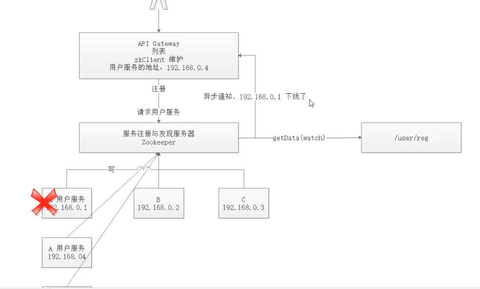

概述
ZooKeeper 是一种分布式协调服务，用于管理大型主机。在分布式环境中协调和管理服务是一个复杂的过程。ZooKeeper 通过其简单的架构和 API 解决了这个问题。ZooKeeper 允许开发人员专注于核心应用程序逻辑，而不必担心应用程序的分布式特性。
Zookeeper 的数据模型
Zookeeper 的数据模型是什么样子呢？它很像数据结构当中的树，也很像文件系统的目录。

树是由节点所组成，Zookeeper 的数据存储也同样是基于节点，这种节点叫做 Znode
但是，不同于树的节点，Znode 的引用方式是路径引用，类似于文件路径：
1 | /动物/猫 |
这样的层级结构，让每一个 Znode 节点拥有唯一的路径，就像命名空间一样对不同信息作出清晰的隔离。
Znode 包含哪些元素

- data：Znode 存储的数据信息。
- ACL：记录 Znode 的访问权限，即哪些人或哪些 IP 可以访问本节点。
- stat：包含 Znode 的各种元数据，比如事务 ID、版本号、时间戳、大小等等。
- child：当前节点的子节点引用
这里需要注意一点，Zookeeper 是为读多写少的场景所设计。Znode 并不是用来存储大规模业务数据，而是用于存储少量的状态和配置信息，每个节点的数据最大不能超过 1MB。
Zookeeper 的基本操作
创建节点
1 | create |
删除节点
1 | delete |
判断节点是否存在
1 | exists |
获得一个节点的数据
1 | getData |
设置一个节点的数据
1 | setData |
获取节点下的所有子节点
1 | getChildren |
这其中，exists，getData，getChildren 属于读操作。Zookeeper 客户端在请求读操作的时候，可以选择是否设置 Watch
Zookeeper 的事件通知
我们可以把 Watch 理解成是注册在特定 Znode 上的触发器。当这个 Znode 发生改变，也就是调用了 create，delete，setData 方法的时候，将会触发 Znode 上注册的对应事件，请求 Watch 的客户端会接收到异步通知。
具体交互过程如下：
- 客户端调用
getData方法，watch参数是true。服务端接到请求，返回节点数据，并且在对应的哈希表里插入被 Watch 的 Znode 路径，以及 Watcher 列表。

- 当被 Watch 的 Znode 已删除，服务端会查找哈希表，找到该 Znode 对应的所有 Watcher，异步通知客户端，并且删除哈希表中对应的 Key-Value。

这一通知特性就可以应用到服务注册与服务发现：

服务注册：用户服务A 通过zkClient的写操作，写到zookeeper服务中，api gateway服务叶写到这个服务中
服务发现：当一个用户通过api网关请求访问登录，通过读操作，读取用户服务注册（写）的访问路径
当服务下线了，watch异步通知api网关，服务下线了
Zookeeper 的一致性
Zookeeper 身为分布式系统协调服务，如果自身挂了如何处理呢？为了防止单机挂掉的情况，Zookeeper 维护了一个集群。如下图：

Zookeeper Service 集群是一主多从结构。
在更新数据时，首先更新到主节点（这里的节点是指服务器，不是 Znode），再同步到从节点。
在读取数据时，直接读取任意从节点。
为了保证主从节点的数据一致性，Zookeeper 采用了 ZAB 协议，这种协议非常类似于一致性算法 Paxos 和 Raft。
什么是 ZAB
Zookeeper Atomic Broadcast，有效解决了 Zookeeper 集群崩溃恢复，以及主从同步数据的问题。
ZAB 协议定义的三种节点状态
- Looking ：选举状态。
- Following ：Follower 节点（从节点）所处的状态。
- Leading ：Leader 节点（主节点）所处状态。
最大 ZXID
最大 ZXID 也就是节点本地的最新事务编号，包含 epoch 和计数两部分。epoch 是纪元的意思，相当于 Raft 算法选主时候的 term。
ZAB 的崩溃恢复
假如 Zookeeper 当前的主节点挂掉了，集群会进行崩溃恢复。ZAB 的崩溃恢复分成三个阶段：
Leader election
选举阶段，此时集群中的节点处于 Looking 状态。它们会各自向其他节点发起投票，投票当中包含自己的服务器 ID 和最新事务 ID（ZXID）。

接下来，节点会用自身的 ZXID 和从其他节点接收到的 ZXID 做比较，如果发现别人家的 ZXID 比自己大，也就是数据比自己新，那么就重新发起投票，投票给目前已知最大的 ZXID 所属节点。

每次投票后，服务器都会统计投票数量，判断是否有某个节点得到半数以上的投票。如果存在这样的节点，该节点将会成为准 Leader，状态变为 Leading。其他节点的状态变为 Following。

Discovery
发现阶段，用于在从节点中发现最新的 ZXID 和事务日志。或许有人会问：既然 Leader 被选为主节点，已经是集群里数据最新的了，为什么还要从节点中寻找最新事务呢？
这是为了防止某些意外情况，比如因网络原因在上一阶段产生多个 Leader 的情况。
所以这一阶段，Leader 集思广益，接收所有 Follower 发来各自的最新 epoch 值。Leader 从中选出最大的 epoch，基于此值加 1，生成新的 epoch 分发给各个 Follower。
各个 Follower 收到全新的 epoch 后，返回 ACK 给 Leader，带上各自最大的 ZXID 和历史事务日志。Leader 选出最大的 ZXID，并更新自身历史日志。
Synchronization
同步阶段，把 Leader 刚才收集得到的最新历史事务日志，同步给集群中所有的 Follower。只有当半数 Follower 同步成功，这个准 Leader 才能成为正式的 Leader。
自此，故障恢复正式完成。
ZAB 的数据写入
Broadcast
ZAB 的数据写入涉及到 Broadcast 阶段，简单来说，就是 Zookeeper 常规情况下更新数据的时候，由 Leader 广播到所有的 Follower。其过程如下：
- 客户端发出写入数据请求给任意 Follower。
- Follower 把写入数据请求转发给 Leader。
- Leader 采用二阶段提交方式，先发送 Propose 广播给 Follower。
- Follower 接到 Propose 消息，写入日志成功后，返回 ACK 消息给 Leader。
- Leader 接到半数以上ACK消息，返回成功给客户端，并且广播 Commit 请求给 Follower

ZAB 协议既不是强一致性，也不是弱一致性，而是处于两者之间的单调一致性（顺序一致性）。它依靠事务 ID 和版本号，保证了数据的更新和读取是有序的。
Zookeeper 的应用场景
分布式锁
这是雅虎研究员设计 Zookeeper 的初衷。利用 Zookeeper 的临时顺序节点，可以轻松实现分布式锁。
服务注册和发现
利用 Znode 和 Watcher，可以实现分布式服务的注册和发现。最著名的应用就是阿里的分布式 RPC 框架 Dubbo。
共享配置和状态信息
Redis 的分布式解决方案 Codis，就利用了 Zookeeper 来存放数据路由表和 codis-proxy 节点的元信息。同时 codis-config 发起的命令都会通过 ZooKeeper 同步到各个存活的 codis-proxy。
此外，Kafka、HBase、Hadoop，也都依靠Zookeeper同步节点信息，实现高可用。